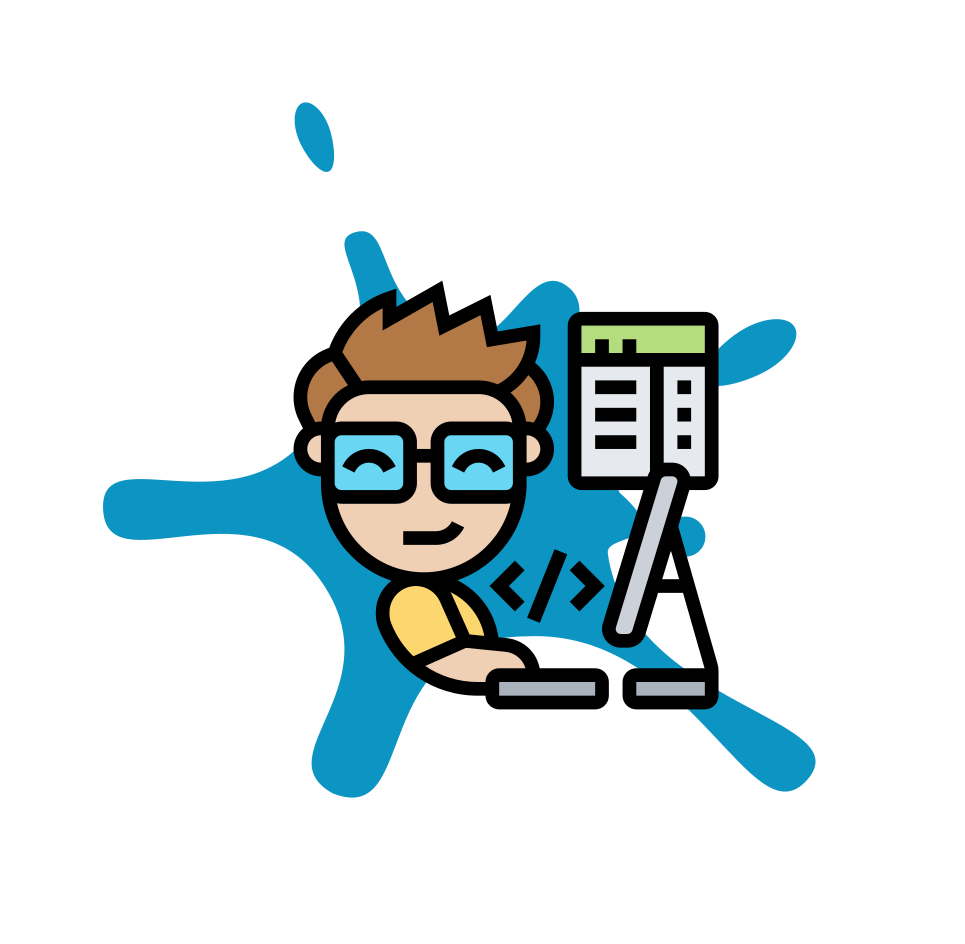

<div class="aboutContent">
  <p class="text">
    Olá, tudo bem? Espero que sim!!
    <br><br>
    <span>Me chamo Henrique Fernandez</span>, mas pode me chamar de Rick. =)
    <br><br>
    Tenho <span>19 anos</span>, sou graduado em Sistemas para Internet pela FIAP, onde estudei <span>Desenvolvimento Web e Mobile Full-Stack</span> (
      tenho como área de atuação principal o Desenvolvimento Web).
    <br><br>
    Tive minha primeira oportunidade de emprego na área, em um programa de estágio na CPQI (an Exadel Company).
    <br><br>
    Na <span>primeira fase do estágio</span>, fiquei estudando e <span>atuando em diversos projetos</span>.
    <br>
    Como na <span>TrIM Platform</span>, que era um <span>projeto legado</span> (desenvolvido em <span>Blazor</span> Framework para o <span>Front-End</span>, e <span>.NET/ C#</span> para o <span>Back-End</span>) que era a plataforma interna da empresa.
    <br><br>
    Na <span>refatoração dessa mesma plataforma</span>, onde <span>atuei desde a criação do design e prototipação</span> das novas telas, <span>até o seu desenvolvimento</span> (desenvolvido em <span>Angular</span> para o <span>Front-End</span> e <span>.NET/ C#</span> para o <span>Back-End</span>).
    <br><br>
    E atuei <span>na criação de um novo projeto</span> interno para a empresa, chamado <span>Exadel KPI (Exadel Key Performance Indicator)</span>, que era <span>utilizado pelos 'Headers'</span> da empresa <span>para fazerem uma análise da performance de cada setor da mesma</span>. Como na refatoração, <span>atuei</span> desde o <span>design e prototipação das telas</span>, até o seu <span>desenvolvimento</span> (desenvolvido em <span>ReactJs</span> para o <span>Front-End</span> e <span>Nest.Js</span> para o <span>Back-End</span>).
    <br><br>
    <span>Após essa fase</span> fui <span>alocado</span> em um projeto do <span>banco BTG Pactual</span>, que era cliente da empresa.
    <br>
    Neste projeto <span>era responsável</span> por priorizar a <span>sustençao dos processos diários do banco</span> e <span>realizar melhorias na plataforma interna do mesmo</span>.
  </p>

  
</div>

